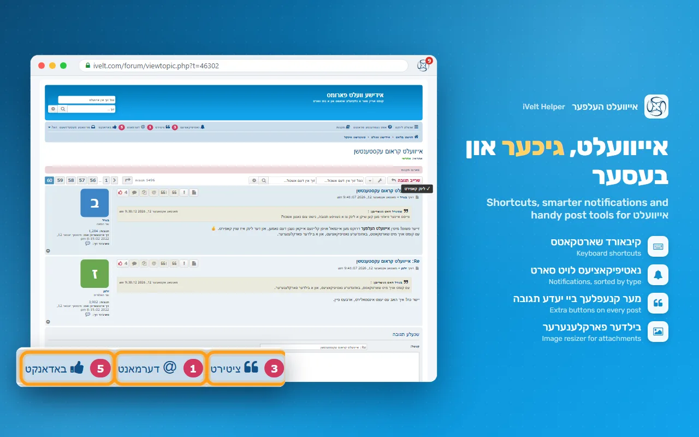
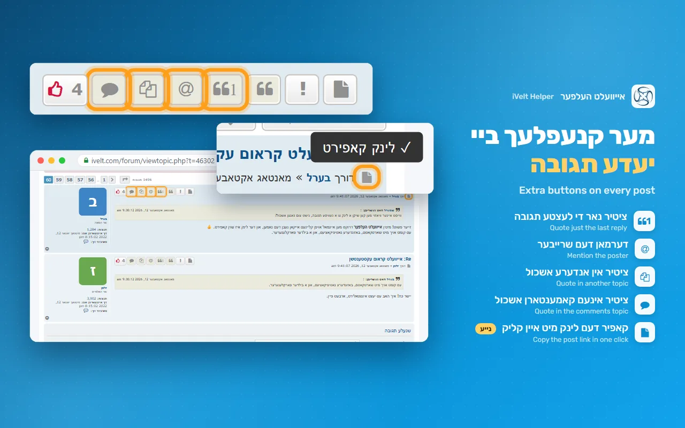
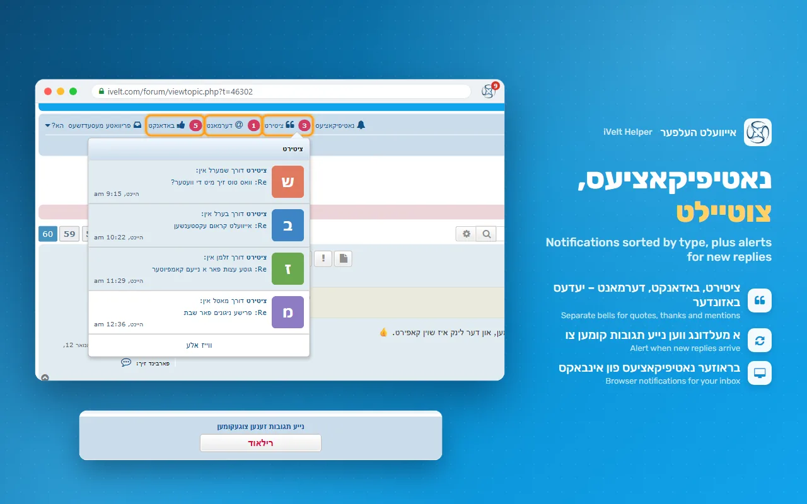
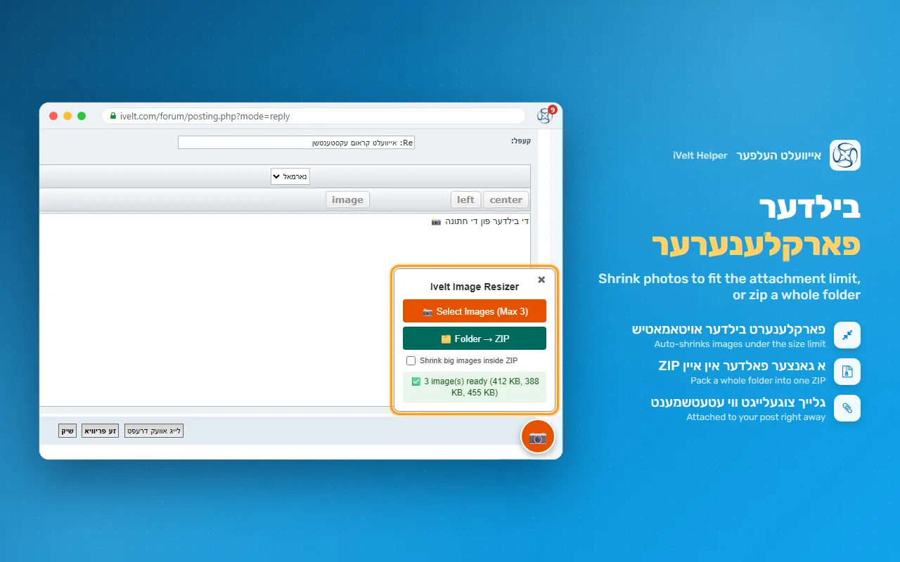
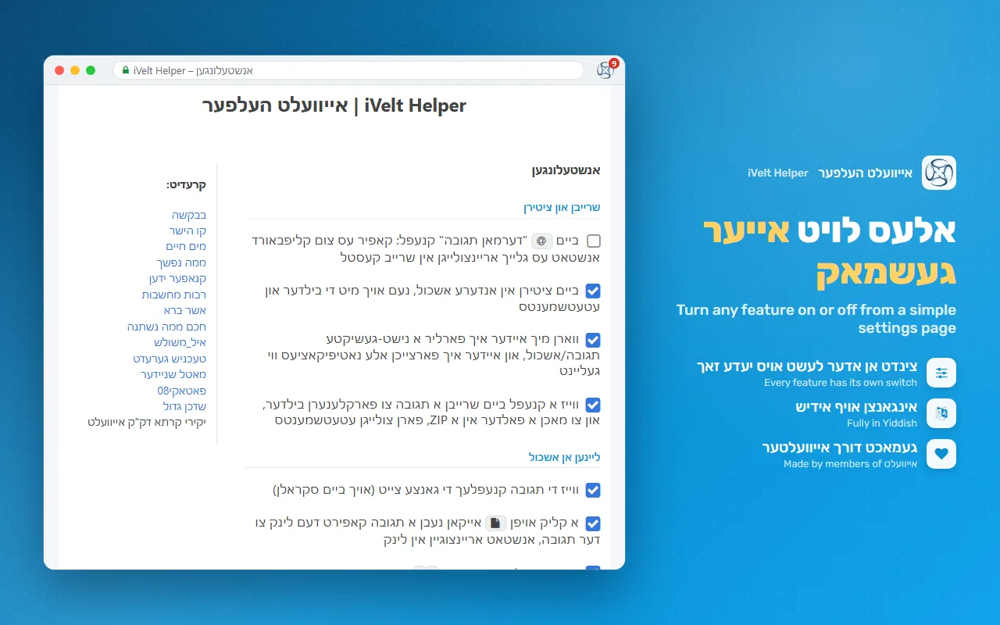
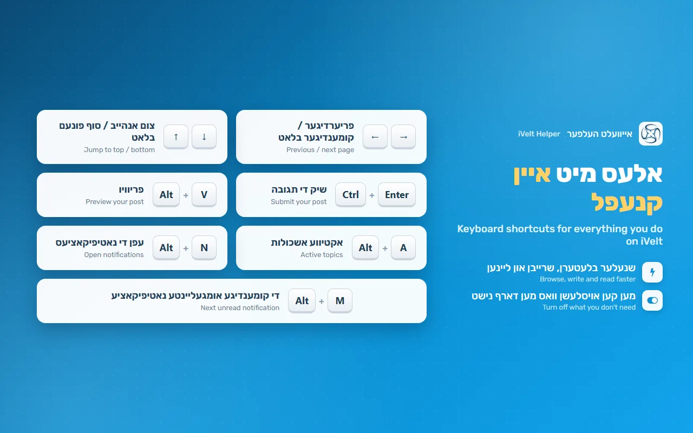

iVelt Helper V2
A free browser extension that adds keyboard shortcuts, notifications, extra post buttons and other improvements to the אייוועלט forum.
א פרייע בראוזער עקסטענשען וואס לייגט צו קיבאורד שארטקאטס, נאטיפיקאציעס, נאך קנעפלעך ביי תגובות, און אנדערע נוצליכע זאכן צו די אייוועלט פארומס.


Featuresוואס עס טוט
Keyboard shortcutsקיבאורד שארטקאטס
- → / ← previous / next page
- Ctrl+Enter submit a post
- Alt+v preview
- Alt+a active topics
- Alt+n / m notifications
- → / ← פריערדיגער / קומענדיגער בלאט
- Ctrl+Enter שיק די תגובה
- Alt+v פריוויו
- Alt+a אקטיווע אשכולות
- Alt+n / m נאטיפיקאציעס
Post buttonsקנעפלעך ביי א תגובה
- Quote only the last reply
- Mention the poster
- Quote in another topic, with images
- Quote in the comments topic
- Copy a link to the post
- ציטיר נאר די לעצטע תגובה
- דערמאן דעם שרייבער
- ציטיר אין אנדערע אשכול, מיט די בילדער
- ציטיר אינעם קאמענטארן אשכול
- קאפיר דעם לינק צו דער תגובה
Notificationsנאטיפיקאציעס
- Unread count on the toolbar icon
- Optional browser notifications
- Alert when new replies arrive
- Separate bells for quotes, thanks and mentions
- נומער אויפן אייקאן מיט אומגעליינטע נאטיפיקאציעס
- בראוזער נאטיפיקאציעס (אויב מען וויל)
- א מעלדונג ווען נייע תגובות קומען צו
- באזונדערע גלעקלעך פאר ציטירט, באדאנקט און דערמאנט
Writing postsשרייבן א תגובה
- Warning before losing an unsent post
- Image Resizer: shrink images under the attachment limit
- Pack a whole folder into one ZIP attachment
- Upload files to your Google Drive or Dropbox and insert a link New
- ווארנט איידער מען פארלירט א נישט-געשיקטע תגובה
- בילדער פארקלענערער: פאסט בילדער אריין אין די עטעטשמענט גרייס
- מאכט א גאנצן פאלדער אין איין ZIP עטעטשמענט
- לייגט ארויף פיילס אויף אייער Google Drive אדער Dropbox און לייגט אריין א לינק נייע
And moreאון נאך
- Google search within a topic or the whole site
- Print several pages or a whole topic
- Popup with quick links, quick sign-in and emergency sign-out
- גוגל זוך אינעם אשכול אדער אין גאנץ אייוועלט
- פרינט עטליכע בלעטער אדער א גאנצן אשכול
- פאפ-אפ מיט גיכע לינקס, אריינלאגן און עמערזשענסי ארויסלאגן
Screenshotsבילדער






Your privacyאייער פריוואטקייט
iVelt Helper has no server of its own and no tracking. Your settings stay in your browser. Read the privacy policy.
אייוועלט העלפער האט נישט קיין אייגענעם סערווער און פאלגט נישט נאך קיינעם. אייערע אנשטעלונגען בלייבן אין אייער בראוזער. ליינט די פריוואטקייט פאליסי.